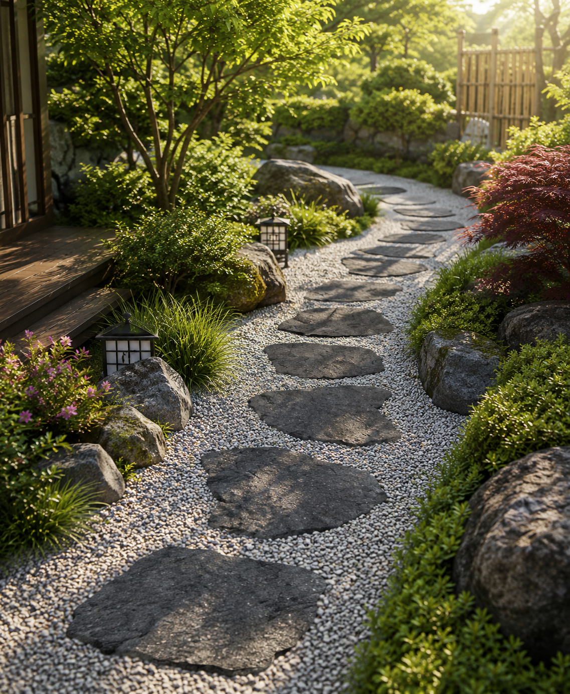
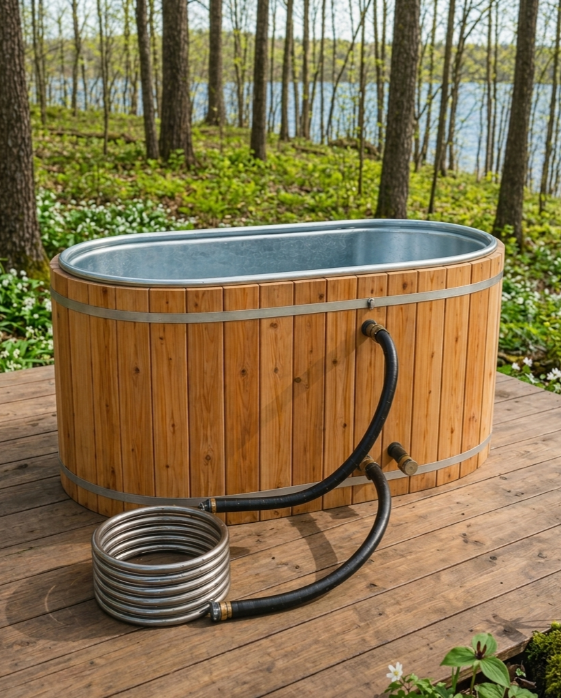
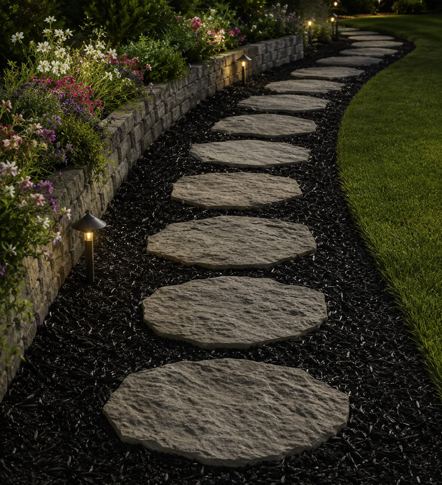
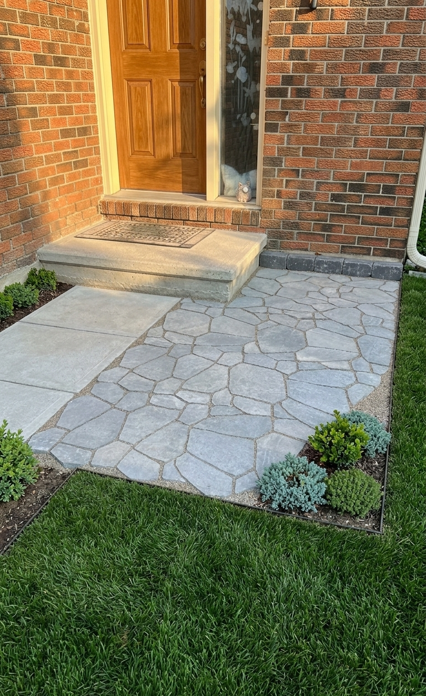
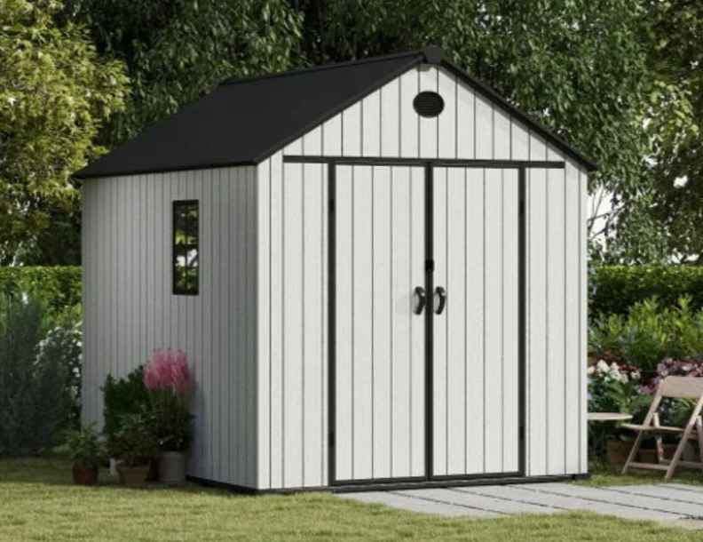

01
Patios & walkways
Stone, slab, gravel, garden tile, and stepping-stone layouts for front entrances, side paths, and backyard spaces.
IBOMU Renovations creates clean, modern outdoor upgrades including patios, walkways, fire pits, gazebos, sheds, garden features, and small pond-style backyard designs.

Simple upgrades that make the space look cleaner, more usable, and ready for relaxing or hosting.
We focus on practical, good-looking upgrades that change the way your backyard or front entrance feels.
Stone, slab, gravel, garden tile, and stepping-stone layouts for front entrances, side paths, and backyard spaces.
Round fire pit pads, stone-style patio circles, gravel bases, and cozy areas for outdoor evenings.
Outdoor structures with clean bases, layout planning, delivery support, and installation-ready setups.
Mulch beds, decorative rock, edging, plants, lighting, and cleaner layouts around walkways or patios.
Simple water-feature concepts, stone borders, natural layouts, and low-maintenance backyard focal points.
Have an idea? We can help plan the layout, choose the look, and build a clean final result.
Examples of the types of spaces we build and the style we can create for your home.





Send us the space, tell us the idea, and we’ll help you figure out the cleanest way to make it happen.
Share your backyard, front yard, or entrance area with rough measurements.
Pick from patio, walkway, fire pit, gazebo, shed base, garden, or pond-style ideas.
We give you a clear price and explain what is included before the work starts.
We complete the installation and leave the area looking clean and finished.
Send us photos of the area, rough measurements, and what you want done. We’ll reply with next steps and a quote.